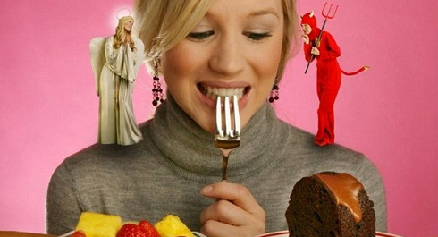

Today we are going to guide or even rather to warn you against the hook you might swallow when chasing your ideal physique. As we’ve already covered, your appearance and your lifestyle as well as eating habits go hand in hand. You are one tough cookie if you did get the guts to develop some healthy habits, but all too often, the obsession with your weight and body image comes off the wall, which is suggestive of such a mental eating disorder as orthorexia. We want to bring you up to speed on the issue and on how negatively it might affect your health and life.

What is an Eating Disorder (ED)?
It’s an illness that includes both medical and psychological aspects. I guess, you've heard of such eating disorders as:
1. Anorexia nervosa (where people eat too little and thus have a low body weight resulting in various comorbidities and even death)
2. Bulimia nervosa (repeated episodes of binge eating which is often compensated for by different behaviors to control weight like vomiting, misusing laxatives and diuretics, fasting and excessive exercise)
3. Compulsive overeating
Those are most typical examples though the list goes well beyond. EDs are usually comorbid with psychiatric disorders such as depression, anxiety, and obsessive-compulsive disorders. People suffering from EDs develop a preoccupation with healthy eating, their body image, and weight.
How serious is it?
Let's go into the statistics. Up to 4% of your country are people suffer from EDs. 20% of anorexics die from starvation or diseases caused by malnutrition, while 5% of those with eating disorders die from the related causes. So, yes. Pretty serious.

Although a high-risk group for developing an eating disorder includes young women aged 20-30 years regardless of their social status, EDs can occur in women of other ages and in men as well.
Do I have an eating disorder
There are some key psychological and behavioral warning signs and symptoms of ED (hold onto your seat, this checklist might be an eye-opener)
1. Fear of gaining weight
2. Negative or distorted body image (e.g. “I am fat” or “My muscles are too small”)
3. Repetitive mirror “checks”. Your self-esteem depends on the way you look.
4. Avoidance of all social situations involving eating food
5. Food obsession
6. Obsessive behaviors around watching cookery shows and collecting recipes
7. Hoarding food
8. Eating only those foods that are considered “healthy” or “safe”
9. Deliberate skipping meals.
10. Irritability
11. Self-harming
12. Substance abuse (alcohol, drugs)
13. Compulsive insistence on performing everyday rituals and feeling anxious and irritated when they are not followed
14. Cooking meals for others but not consuming the food yourself
15. Eating weird combos of random foods (cake and soup)
16. Social withdrawal
17. Wearing baggy clothes
18. Moodiness or inability to identify and express or describe your emotions
Besides, each type of ED is characterized by its own signs (a hallmark of anorexia is denial of the current low body weight).
What are the dangers of eating disorders?
In addition to their impact on your social life? Either way, they do contribute to your poor eating habits and malnutrition, so your body is bound to pay you back with the following physiological changes:
1. Chronic fatigue
2. Dehydration
3. Slow heart rate (bradycardia)
4. Low arterial blood pressure
5. Electrolyte imbalance
6. Osteoporosis
7. Low endurance
8. Loss of strength
9. Muscle cramps
10. Hyperthermia
What are the causes of eating disorders?
An eating disorder can be triggered by even such a softball as a wish to get in shape where people are simply driven by their personal motives like:
1. Blind faith in “the less you weigh, the better”
2. Perfectionism, excessive criticism of one’s body
3. The attitude of “I’ll die trying” set by oneself or suggested by others (a coach or a sexual partner)
4. Compensating for one’s setback in other spheres (“Yeah, I failed at that. But at least I can slim down/look better, though.”)
What to do if you suspect you have an ED, or what to do to avoid it?

Firstly, you should keep in mind that in some cases it's only the specialized professionals who can help an ED sufferer to recover. However, there is a set of clear-cut tips on your personal self-check. For example, many people forget their initial goal, when they decided to watch weight, was to become healthier and improve their physique. If you remember it, at least from your school biology course, that the structure and functions of any part of a living organism are tightly coupled. As we already discussed, your body is a projection of your lifestyle. For this very reason, when you change your body, don’t you forget that it’s nothing but a cherry on the cake while you are heading towards health, better performance, and specific skills. Having hit the road of changes, you should avoid turning to the goals or techniques that might be harmful to your health.
When you consider adding exercise to your daily routine (cuz we all do some sort of regular training), keep in mind that it should be an enjoyable part of the day (if you’re a dancer who needs the whip-lash to go to the chin-up bar, you better go to the dance-floor). Diets or workouts shouldn’t be an exhaustive chore. According to the WHO, health is a state of complete physical, mental and social well-being. Do your best at keeping it balanced instead of building up one aspect to the detriment of another.
Set realistic and reachable goals to steer away from physical or emotional burnout while reaching them. Ask yourself once in a while, “Will I be able to eat or train like that all my life?”. “Yes, I will” – keep going. “No, I won’t” – revise your diet and/or training plan.
You might think that our tips are only targeted at overanxious ladies, but this information is on the front burner for far wider audience. Let’s take a chap who wants a beach-ready body. How does he come into the picture? A row of dominoes goes like this: beautiful body – big muscles – more big muscles – get more big muscles or die trying – eating disorder. Or: beautiful body – big muscles – burn fat to get shredded – burn more fat – eating disorder.
Well, today’s infopost is rather alarming and stirring. For more information follow the links below. Keep your head cool and win your goal!
Firstly, you should keep in mind that in some cases it's only the specialized professionals who can help an ED sufferer to recover. However, there is a set of clear-cut tips on your personal self-check. For example, many people forget their initial goal, when they decided to watch weight, was to become healthier and improve their physique. If you remember it, at least from your school biology course, that the structure and functions of any part of a living organism are tightly coupled. As we already discussed, your body is a projection of your lifestyle. For this very reason, when you change your body, don’t you forget that it’s nothing but a cherry on the cake while you are heading towards health, better performance, and specific skills. Having hit the road of changes, you should avoid turning to the goals or techniques that might be harmful to your health.
When you consider adding exercise to your daily routine (cuz we all do some sort of regular training), keep in mind that it should be an enjoyable part of the day (if you’re a dancer who needs the whip-lash to go to the chin-up bar, you better go to the dance-floor). Diets or workouts shouldn’t be an exhaustive chore. According to the WHO, health is a state of complete physical, mental and social well-being. Do your best at keeping it balanced instead of building up one aspect to the detriment of another.
Set realistic and reachable goals to steer away from physical or emotional burnout while reaching them. Ask yourself once in a while, “Will I be able to eat or train like that all my life?”. “Yes, I will” – keep going. “No, I won’t” – revise your diet and/or training plan.
You might think that our tips are only targeted at overanxious ladies, but this information is on the front burner for far wider audience. Let’s take a chap who wants a beach-ready body. How does he come into the picture? A row of dominoes goes like this: beautiful body – big muscles – more big muscles – get more big muscles or die trying – eating disorder. Or: beautiful body – big muscles – burn fat to get shredded – burn more fat – eating disorder.
Well, today’s infopost is rather alarming and stirring. For more information follow the links below. Keep your head cool and win your goal!